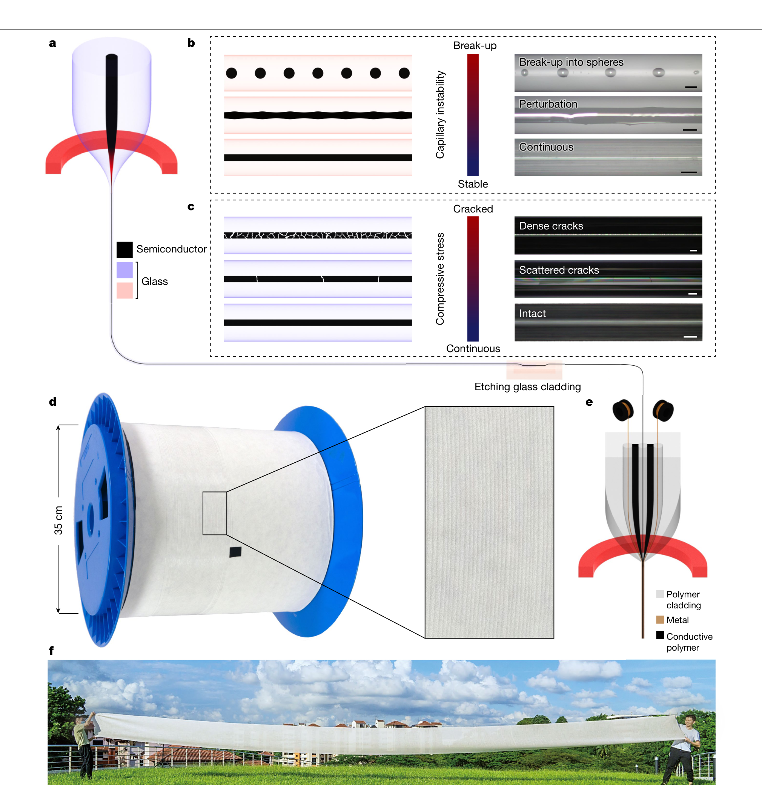
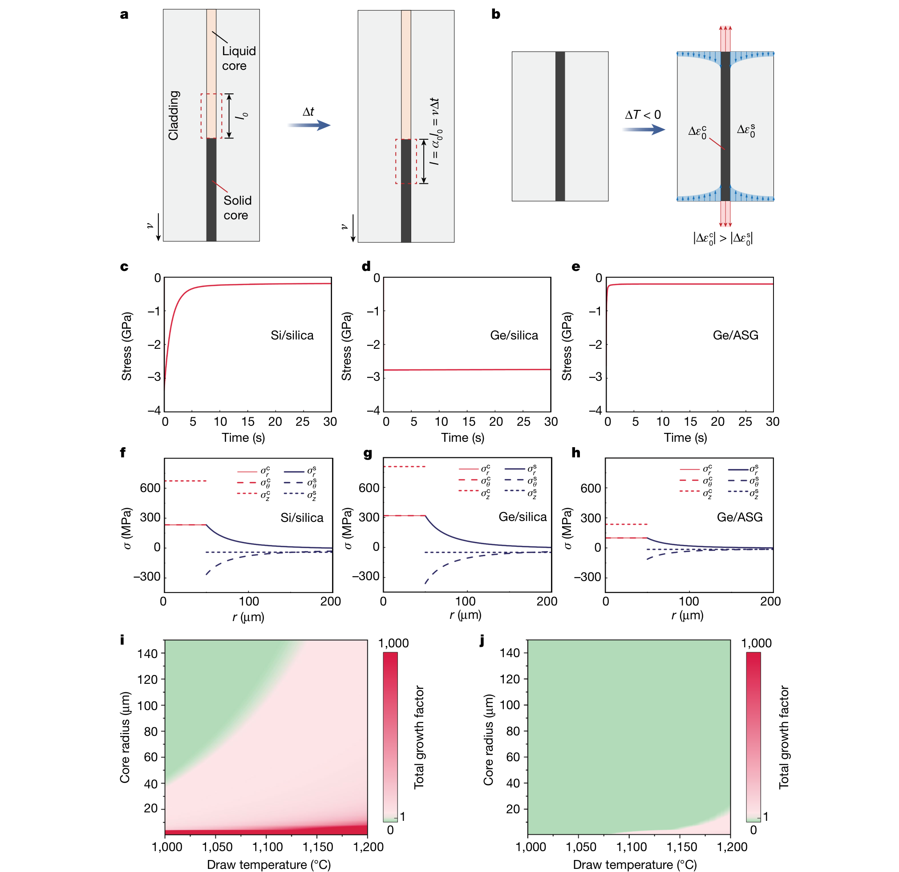
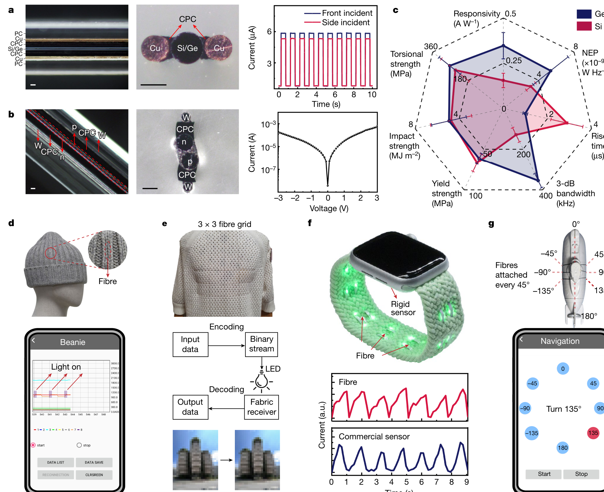
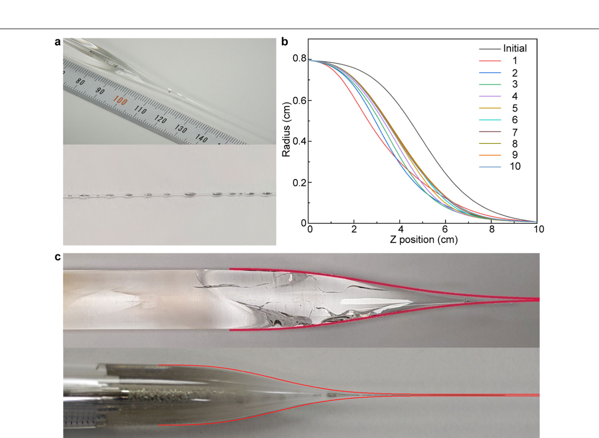
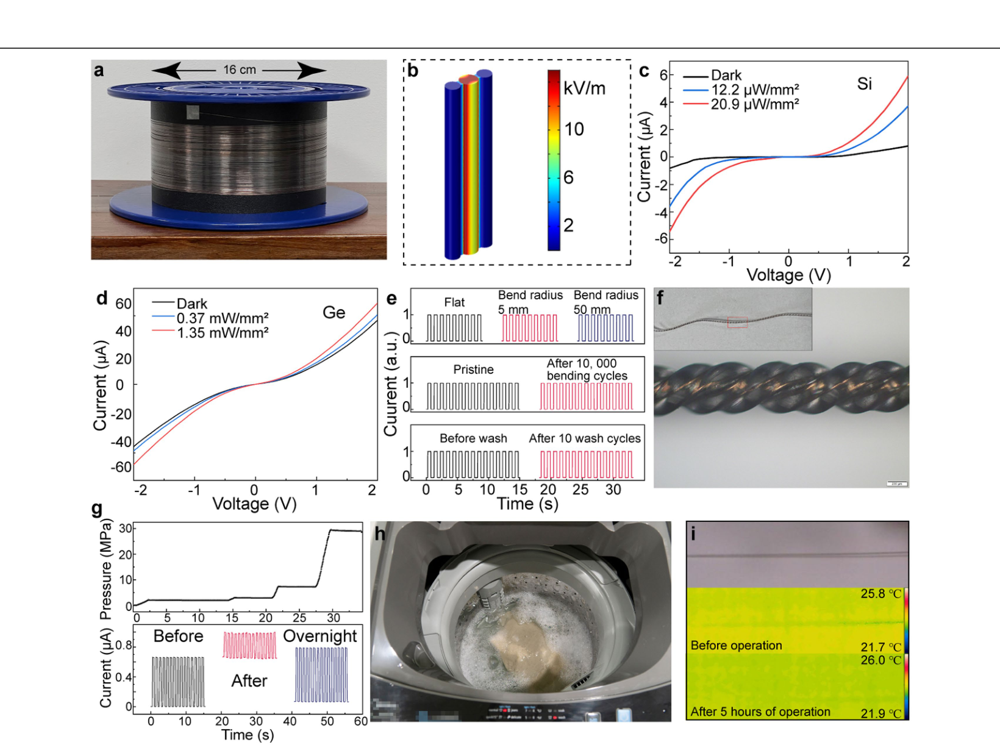

FIG. 1
先把失败拆成两类：液芯会断，固芯会裂
设计问题由此变清楚：前半程控制毛细不稳定性，后半程控制残余压应力。

这篇论文真正解决的不是“能不能把 Si/Ge 塞进玻璃”，而是热拉丝途中液芯会断、凝固后会裂的两类失稳。作者把流体稳定性、应力松弛与热膨胀匹配写成一套材料筛选规则，并用器件和织物演示证明它不只是漂亮的长纤维。
图像来自用户提供的原始论文 PDF，按图体高清截取并保留原始面板标记；不在本站分发整篇 PDF。该论文以 CC BY 4.0 发布，图像归原作者与出版方所有。
作者把半导体芯/玻璃包层的选择从经验试错改成机械设计：拉丝时让玻璃黏度足以压制毛细失稳；凝固时让应力在短时间内松弛；冷却时让热膨胀系数尽量接近。Ge/砷硫玻璃（ASG）因此能在不到 1 秒内释放应力，而 Ge/石英需要超过 1000 秒，最终得到约 100 米连续芯并实现光电探测、织物通信、脉搏与水下方向感知。
设计问题由此变清楚：前半程控制毛细不稳定性，后半程控制残余压应力。

作者把芯凝固、包层黏弹松弛、热收缩失配和毛细增长放进同一张设计图。

这张图承担“有用性证明”：纤维既能形成结型器件，也能在弯折、织造和水下环境中工作。

补充图不是装饰，它显示毛细失稳模型能复现实验中的颈缩传播。

这组测试把“可拉很长”推进到“能作为纺织部件使用”，但仍不是长期服役认证。
